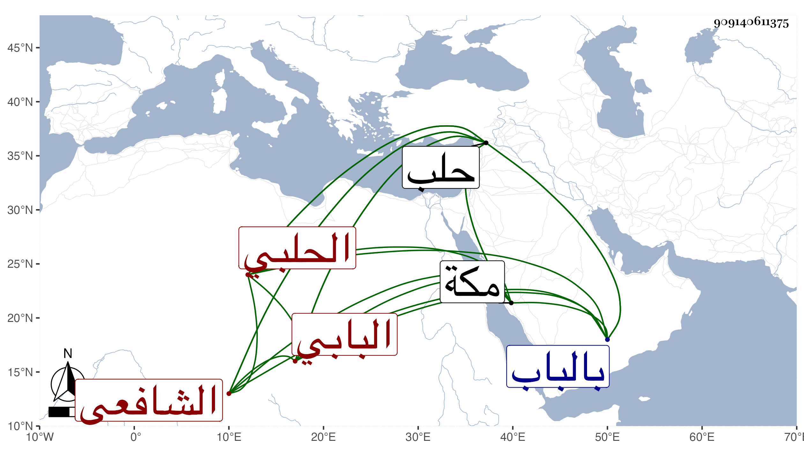

0902Sakhawi.DawLamic.ITO20230111-ara1.EIS1600.909140611375
Biography ID: 909140611375
1008
محمد بن أحمد بن حسن بن علي الشمس البابي ثم الحلبي الشافعي . ولد بالباب ثم قدم حلب سنة ست وثلاثين فنزل الحلاوية النورية وسمع فيما قال البرهان الحلبي : ثم أخذ عن ولده أبي ذر والفقه عن يوسف الكردي والقراآت عن عبيد بن أبي المنى والتقى أبي بكر بن أبي بكر البابيلي بن الحيشي وبمكة حين جاور بها سنة اثنتين وأربعين عن الزين بن عياش وسمع عليه الحديث وتزوج في سنة ثلاث وأربعين ابنة الشمس محمد الحيشي وسكن عنده ولازمه وأجار له شيخنا وكتب بخطه أشياء كالصحيحين والدميري لنفسه ولغيره وناب عن العز النحريري المالكي في الإمامة بمقصورة الحجازية من جامع حلب ثم عن بني الشحنة بمحرابه الكبير . مات بحلب في مستهل رجب سنة سبع وثمانين بعد تمرضه بالفالج قليلا ودفن بالناعورة بزاوية الأطعاني وصلينا عليه بمكة صلاة الغائب وكان كثير العبادة والتلاوة يقرأ في كل يوم غالبا ختما رحمه الله .
